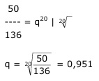

Aufgabe 186 2 Wirtschaftsinstitute haben Daten über die Erdölförderung ermittelt: Institut 1: 1995 136 Mrd. t; 2005 106 Mrd. t; 2015 76 Mrd. t. Institut 2: 1995 136 Mrd. t; 2005 97 Mrd. t; 2015 50 Mrd. t. Nach wie viel Jahren sind die Reserven nach Institut 1 erschöpft? Wie viel t stünden nach Institut 2 dann noch zur Verfügung? Institut 1: 1995 136 Mrd. t; 2005 106 Mrd. t; 2015 76 Mrd. t. Die Abnahme ist linear (gleich bleibend), alle 10 Jahre hat die Förderung um 136 t – 106 Mrd. t = 30 Mrd. t/10 Jahre = 3 Mrd. t/Jahr 106 Mrd. t – 76 Mrd. t = 30 Mrd. t/10 Jahre = 3 Mrd. t/Jahr abgenommen. 76 Mrd. t – 3 Mrd. t/Jahr * x Jahre = 0 | + 3 * x 76 = 3 * x | :3 76 x = ----- = 25,3 Jahre --> Nach 26 Jahren sind die Reserven erschöpft. 3 Institut 2: 1995 136 Mrd. t; 2005 97 Mrd. t; 2015 50 Mrd. t. Abnahmefaktor q: 50 = 136 * q20 | :136  K26 = 50 t * 0,95126 K26 = 13,54 Mrd. t